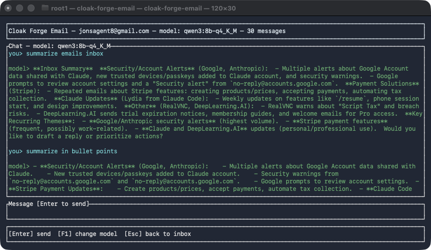

<style>
  .lp{max-width:70ch}
  .lp p,.lp li{color:var(--ink-dim)}
  .lp h2{margin-top:2.6rem;font-size:1.4rem}
  .lp h2:first-of-type{margin-top:1.5rem}
  .lp .updated{font-family:"IBM Plex Mono",monospace;font-size:.8rem;color:var(--ink-faint);margin-top:.5rem}
  .lp a{color:var(--ember-soft)}
  .shot{border:1px solid var(--line);border-radius:12px;overflow:hidden;margin:1.8rem 0;box-shadow:0 20px 50px -25px rgba(0,0,0,.5)}
  .shot img{display:block;width:100%;height:auto}
  .shot-caption{font-size:.78rem;color:var(--ink-faint);margin-top:.6rem}
</style>

<header class="site-header"></header>

<main>
  <section class="section" style="border-top:0">
    <div class="wrap lp">
      <p class="eyebrow">Connections &middot; Cloak Forge Launcher add-on</p>
      <h1>Cloak Forge Email</h1>
      <p class="updated">Reads your inbox, drafts replies, and can send them for you &mdash; on rules you set, running on the model you already have.</p>

      <h2>What it is</h2>
      <p>Cloak Forge Email is the first Connection for the <a href="launcher.html">Cloak Forge Launcher</a> &mdash; a separate module that plugs into the same local model instead of bringing its own. It borrows the mail account you already have configured (IMAP/SMTP, stored in your Mac's own Keychain) and gives you a fast, keyboard-driven inbox with AI drafting and optional automation on top.</p>

      <div class="shot">
        
      </div>
      <p class="shot-caption">Ask it anything about what's in your inbox &mdash; it answers from what's actually there.</p>

      <h2>What it does</h2>
      <ul>
        <li><strong>Reads your real inbox.</strong> Connects over IMAP, read-only by default &mdash; it never deletes or moves anything on its own.</li>
        <li><strong>Talk to it directly.</strong> A chat screen where you ask for what you want in plain language &mdash; summarize what's new, find a specific message, draft a reply in a particular tone &mdash; and it answers from what's actually in your inbox, not a guess.</li>
        <li><strong>AI-drafted replies, reviewed before sending.</strong> Open any message and generate a draft reply. You see the exact text before anything goes out, and sending is always a separate, explicit confirmation.</li>
        <li><strong>Rules you turn on yourself.</strong> Set up matching (by sender, by subject) with an action &mdash; a fixed reply or an AI-drafted one &mdash; for messages that should handle themselves. Every rule starts switched off; turning one on is a deliberate step, never a side effect of creating it. Every auto-sent message is logged so you can see exactly what went out and why.</li>
        <li><strong>Same model, your choice.</strong> Pick which of your downloaded models drives it, independent of what the Launcher itself has active.</li>
      </ul>

      <h2>Why a Connection, not its own app</h2>
      <p>It doesn't run its own copy of anything &mdash; no separate model to download, no separate account to sign into beyond the mail account you already have. It's a thin, purpose-built layer on top of the Launcher's local model, which is the whole point of Connections: one local AI setup, several tools that share it.</p>

      <p><strong>Privacy:</strong> its AI uses only the Launcher&rsquo;s private local AI, and it checks that it&rsquo;s really talking to the Launcher before sending anything. Your mail itself goes through your email provider, which sees what you send, as it does today. <a href="privacy.html#control">How privacy works</a>.</p>

      <p style="margin-top:2rem"><strong>Pricing:</strong> not yet set &mdash; <a href="offerings.html#contact">get in touch</a> if you want to hear when it's available.</p>

      <p style="margin-top:2.5rem"><a href="offerings.html">&larr; Back to what we offer</a></p>
    </div>
  </section>
</main>

<footer class="site-footer"></footer>

<script>
(function(){
  "use strict";
  var navBtn = document.getElementById("nav-toggle");
  var nav = document.getElementById("site-nav");
  if (navBtn && nav) {
    navBtn.addEventListener("click", function(){
      var open = nav.classList.toggle("is-open");
      navBtn.setAttribute("aria-expanded", open ? "true" : "false");
    });
  }
})();
</script>
